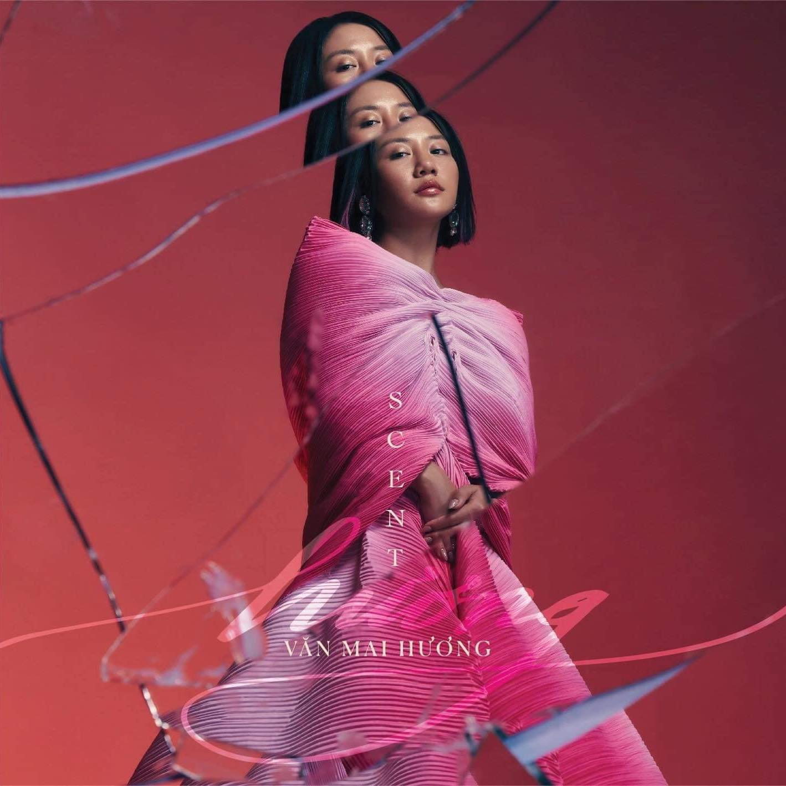
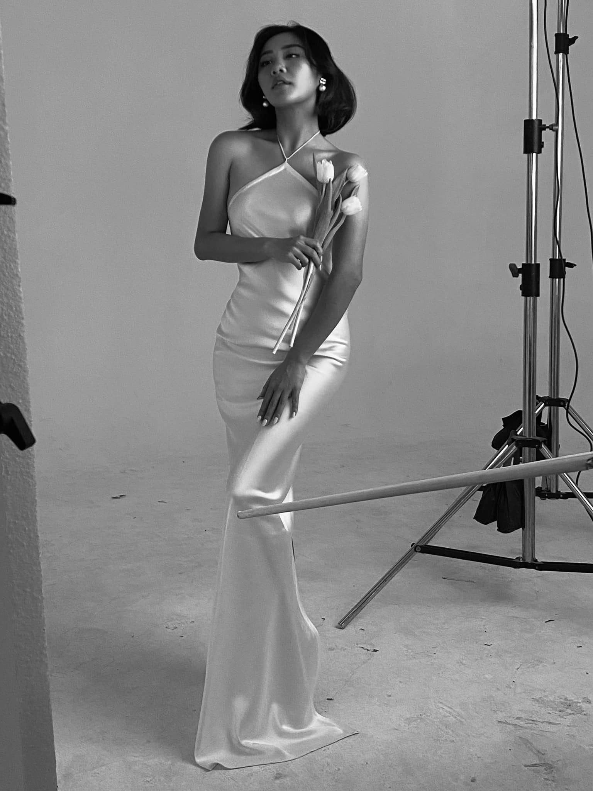

"Với những sản phẩm đơn lẻ ra mắt trong vài năm trở lại đây, khán giả đã thấy một Văn Mai Hương trưởng thành hơn ở cả trong âm nhạc lẫn hình ảnh. Và album Hương với hầu hết là những ca khúc buồn sẽ là cung bậc cảm xúc của người phụ nữ sau khi chia tay. Ở thời điểm hiện tại và trong tương lai, tôi muốn hướng sự nồng nàn, tinh tế qua mỗi bài hát mình thể hiện"
Tôi muốn album Hương lần này sẽ định nghĩa rõ hơn về một Văn Mai Hương ở độ tuổi 25 (thời điểm bắt đầu thực hiện album) là như thế nào. 25 là lứa tuổi rất đặc biệt trong cuộc đời của mỗi con người, không quá nhỏ nhưng cũng không quá lớn và là mốc chuyển giao giữa một người thanh niên và một người trưởng thành. Đây cũng là độ tuổi có nhiều tâm tư, rung động và những trải nghiệm nhất định trong chuyện tình cảm. Cá nhân tôi cũng bằng tuổi với Văn Mai Hương nên muốn cô ấy khắc họa cảm xúc rõ nét nhất ở tuổi 25 ở sản phẩm lần này.
Âm nhạc tôi định hướng cho Văn Mai Hương mang đậm chất tự sự, trải nghiệm và có cả sự thể nghiệm nữa. Đây là thời gian chín muồi để làm những điều đó. Không còn quá trẻ để làm những thứ an toàn nhưng cũng không quá lớn để làm những điều chỉ riêng mình thích. Sản phẩm chính là bài toán cân bằng giữa cá tính âm nhạc và thị yếu của công chúng.
Trong album hầu hết là các ca khúc buồn. Nhưng nỗi buồn ở tuổi 25 không quá đau đớn, dằn vặt mà đã có sự thay đổi về nhân sinh quan. Buồn nhưng vẫn nhìn vào khía cạnh tích cực của nỗi buồn. Và buồn cho đáng một lần rồi bước qua.
Hứa Kim Tuyền
Mai đây em thương một chàng trai.Bình yên sẽ đến ấp ôm em mỗi ban mai...